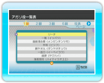
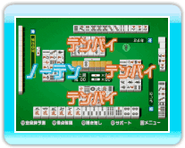

23 |
麻雀の基本② |
 |
対局が始まったら、各プレイヤーが順番に「牌を引く→捨てる」という手順を繰り返します。不要な牌を捨て、手牌をそろえましょう。 ● 手牌をそろえる 順子（シュンツ） 連続した数牌3枚の組み合わせです。 刻子（コウツ） 同じ牌3枚の組み合わせです。自分の手牌のなかで作った刻子を「暗刻（アンコ）」、鳴いて作った刻子を「明刻（ミンコ）」と呼びます。 槓子（カンツ） 特殊な面子で、同じ牌4枚の組み合わせです。槓子を作るには「カン」を行う必要があります。 対子（トイツ） 同じ牌2枚が対子です。 
● 役を作る ● アガる
・ドラ ※リーチ（→P.12）してアガった場合、ドラの裏にある牌もドラ表示牌として使用できます。 
● 流局 |
 |
 |